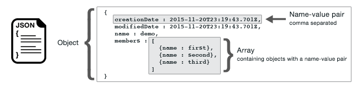

Python Web-Scraping
This is an intermediate / advanced Python tutorial:
- Assumes knowledge of Python, including:
- lists
- dictionaries
- logical indexing
- iteration with for-loops
- Assumes basic knowledge of web page structure
If you need an introduction to Python or a refresher, we recommend our Python Introduction.
Goals
Web scraping background
What is web scraping?
Web scraping is the activity of automating retrieval of information from a web service designed for human interaction.
Is web scraping legal? Is it ethical?
It depends. If you have legal questions seek legal counsel. You can mitigate some ethical issues by building delays and restrictions into your web scraping program so as to avoid impacting the availability of the web service for other users or the cost of hosting the service for the service provider.
Web scraping approaches
No two websites are identical — websites are built for different purposes by different people and so have different underlying structures. Because they are heterogeneous, there is no single way to scrape a website. The scraping approach therefore has to be tailored to each individual site. Here are some commonly used approaches:
- Use requests to extract information from structured JSON files
- Use requests to extract information from HTML
- Automate a browser to retrieve information from HTML
Bear in mind that even once you’ve decided upon the best approach for a particular site, it will be necessary to modify that approach to suit your particular use-case.
How does the web work?
Components
Computers connected to the web are called clients and servers. A simplified diagram of how they interact might look like this:

- Clients are the typical web user’s internet-connected devices (for example, your computer connected to your Wi-Fi) and web-accessing software available on those devices (usually a web browser like Firefox or Chrome).
- Servers are computers that store webpages, sites, or apps. When a client device wants to access a webpage, a copy of the webpage is downloaded from the server onto the client machine to be displayed in the user’s web browser.
- HTTP is a language for clients and servers to speak to each other.
So what happens?
When you type a web address into your browser:
- The browser finds the address of the server that the website lives on.
- The browser sends an HTTP request message to the server, asking it to send a copy of the website to the client.
- If the server approves the client’s request, the server sends the
client a
200 OKmessage, and then starts displaying the website in the browser.
Retrieve data in JSON format if you can
We wish to extract information from https://www.harvardartmuseums.org/collections. Like most modern web pages, a lot goes on behind the scenes to produce the page we see in our browser. Our goal is to pull back the curtain to see what the website does when we interact with it. Once we see how the website works we can start retrieving data from it.
If we are lucky we’ll find a resource that returns the data we’re looking for in a structured format like JSON.

This is useful because it is very easy to convert data from JSON into a spreadsheet type format — like a csv or Excel file.
Examine the website’s structure
The basic strategy is pretty much the same for most scraping projects. We will use our web browser (Chrome or Firefox recommended) to examine the page you wish to retrieve data from, and copy/paste information from your web browser into your scraping program.
We start by opening the collections web page in a web browser and inspecting it.


If we scroll down to the bottom of the Collections page, we’ll see a button that says “Load More”. Let’s see what happens when we click on that button. To do so, click on “Network” in the developer tools window, then click the “Load More Collections” button. You should see a list of requests that were made as a result of clicking that button, as shown below.

If we look at that second request, the one to a script named browse,
we’ll see that it returns all the information we need, in a convenient
format called JSON. All we need to retrieve collection data is to make
GET requests to https://www.harvardartmuseums.org/browse with the
correct parameters.
Launch JupyterLab
- Start the
Anaconda Navigatorprogram - Click the
Launchbutton underJupyter Lab - A browser window will open with your computer’s files listed on the
left hand side of the page. Navigate to the folder called
PythonWebScrapethat you downloaded to your desktop and double-click on the folder - Within the
PythonWebScrapefolder, double-click on the file with the word “BLANK” in the name (PythonWebScrape_BLANK.ipynb). A pop-up window will ask you toSelect Kernal— you should select the Python 3 kernal. The Jupyter Notebook should now open on the right hand side of the page
A Jupyter Notebook contains one or more cells containing notes or
code. To insert a new cell click the + button in the upper left. To
execute a cell, select it and press Control+Enter or click the Run
button at the top.
Making requests
To retrieve information from the website (i.e., make a request), we need to know the location of the information we want to collect. The Uniform Resource Locator (URL) — commonly know as a “web address”, specifies the location of a resource (such as a web page) on the internet.
A URL is usually composed of 5 parts:

The 4th part, the “query string”, contains one or more parameters. The 5th part, the “fragment”, is an internal page reference and may not be present.
For example, the URL we want to retrieve data from has the following structure:
protocol domain path parameters
https www.harvardartmuseums.org browse load_amount=10&offset=0
It is often convenient to create variables containing the domain(s) and
path(s) you’ll be working with, as this allows you to swap out paths and
parameters as needed. Note that the path is separated from the domain
with / and the parameters are separated from the path with ?. If
there are multiple parameters they are separated from each other with a
&.
For example, we can define the domain and path of the collections URL as follows:
museum_domain = 'https://www.harvardartmuseums.org'
collection_path = 'browse'
collection_url = (museum_domain
+ "/"
+ collection_path)
print(collection_url)
## 'https://www.harvardartmuseums.org/browse'
Note that we omit the parameters here because it is usually easier to
pass them as a dict when using the requests library in Python. This
will become clearer shortly.
Now that we’ve constructed the URL we wish to interact with, we’re ready to make our first request in Python.
import requests
collections1 = requests.get(
collection_url,
params = {'load_amount': 10,
'offset': 0}
)
Note that the parameters load_amount and offset are essentially
another way of setting page numbers — they refer to the amount of
information retrieved at one time and the starting position,
respectively.
Parsing JSON data
We already know from inspecting network traffic in our web browser that this URL returns JSON, but we can use Python to verify this assumption.
## 'application/json'
Since JSON is a structured data format, parsing it into Python data structures is easy. In fact, there’s a method for that!
That’s it. Really, we are done here. Everyone go home!
OK not really, there is still more we can learn. But you have to admit that was pretty easy. If you can identify a service that returns the data you want in structured from, web scraping becomes a pretty trivial enterprise. We’ll discuss several other scenarios and topics, but for some web scraping tasks this is really all you need to know.
Organizing & saving the data
The records we retrieved from https://www.harvardartmuseums.org/browse
are arranged as a list of dictionaries. We can easily select the fields
of arrange these data into a pandas DataFrame to facilitate subsequent
analysis.
## copyright contextualtextcount ... dimensions seeAlso
## 0 None 0 ... 18.5 x 25.5 cm (7 5/16 x 1... [{'id': 'https://iiif.harv...
## 1 None 0 ... 17.8 x 14.6 cm (7 x 5 3/4 ... [{'id': 'https://iiif.harv...
## 2 None 0 ... H. 17.7 x W. 11.0 x D. 9.0... [{'id': 'https://iiif.harv...
## 3 None 0 ... image: 21 x 27.6 cm (8 1/4... [{'id': 'https://iiif.harv...
## 4 None 0 ... image: 33 x 25 cm (13 x 9 ... [{'id': 'https://iiif.harv...
## 5 © William Kentridge 0 ... plate: 24.5 x 37.7 cm (9 5... [{'id': 'https://iiif.harv...
## 6 None 0 ... 257.98 g\r\n13.2 × 9.7 cm ... [{'id': 'https://iiif.harv...
## 7 © Artists Rights Society (... 0 ... sheet: 34.5 x 37 cm (13 9/... [{'id': 'https://iiif.harv...
## 8 None 0 ... 16.8 x 26.7 cm (6 5/8 x 10... [{'id': 'https://iiif.harv...
## 9 None 0 ... paintings proper: H. 145.5... [{'id': 'https://iiif.harv...
##
## [10 rows x 62 columns]
and write the data to a file.
Iterating to retrieve all the data
Of course we don’t want just the first page of collections. How can we retrieve all of them?
Now that we know the web service works, and how to make requests in Python, we can iterate in the usual way.
records = []
for offset in range(0, 50, 10):
param_values = {'load_amount': 10, 'offset': offset}
current_request = requests.get(collection_url, params = param_values)
records.extend(current_request.json()['records'])
## copyright contextualtextcount ... seeAlso details
## 0 None 0 ... [{'id': 'https://iiif.harv... NaN
## 1 None 0 ... [{'id': 'https://iiif.harv... NaN
## 2 None 0 ... [{'id': 'https://iiif.harv... NaN
## 3 None 0 ... [{'id': 'https://iiif.harv... NaN
## 4 None 0 ... [{'id': 'https://iiif.harv... NaN
## 5 © William Kentridge 0 ... [{'id': 'https://iiif.harv... NaN
## 6 None 0 ... [{'id': 'https://iiif.harv... NaN
## 7 © Artists Rights Society (... 0 ... [{'id': 'https://iiif.harv... NaN
## 8 None 0 ... [{'id': 'https://iiif.harv... NaN
## 9 None 0 ... [{'id': 'https://iiif.harv... NaN
## 10 None 0 ... [{'id': 'https://iiif.harv... NaN
## 11 None 0 ... [{'id': 'https://iiif.harv... {'coins': {'reverseinscrip...
## 12 None 0 ... [{'id': 'https://iiif.harv... NaN
## 13 \r\n© Vija Celmins, Courte... 0 ... [{'id': 'https://iiif.harv... NaN
## 14 None 0 ... [{'id': 'https://iiif.harv... NaN
## 15 None 1 ... [{'id': 'https://iiif.harv... NaN
## 16 None 0 ... [{'id': 'https://iiif.harv... NaN
## 17 None 0 ... [{'id': 'https://iiif.harv... NaN
## 18 None 0 ... [{'id': 'https://iiif.harv... NaN
## 19 © Sarah Jane Roszak / Arti... 0 ... [{'id': 'https://iiif.harv... NaN
## 20 None 0 ... [{'id': 'https://iiif.harv... NaN
## 21 None 0 ... [{'id': 'https://iiif.harv... NaN
## 22 None 0 ... [{'id': 'https://iiif.harv... NaN
## 23 © Jenny Holzer / Artists R... 0 ... [{'id': 'https://iiif.harv... NaN
## 24 None 0 ... [{'id': 'https://iiif.harv... NaN
## 25 None 0 ... [{'id': 'https://iiif.harv... NaN
## 26 None 0 ... [{'id': 'https://iiif.harv... NaN
## 27 None 0 ... [{'id': 'https://iiif.harv... NaN
## 28 None 0 ... [{'id': 'https://iiif.harv... NaN
## 29 None 0 ... [{'id': 'https://iiif.harv... NaN
## 30 None 0 ... [{'id': 'https://iiif.harv... NaN
## 31 None 0 ... [{'id': 'https://iiif.harv... NaN
## 32 None 0 ... [{'id': 'https://iiif.harv... NaN
## 33 None 0 ... [{'id': 'https://iiif.harv... NaN
## 34 None 0 ... [{'id': 'https://iiif.harv... NaN
## 35 None 0 ... [{'id': 'https://iiif.harv... NaN
## 36 © Gary Schneider 0 ... [{'id': 'https://iiif.harv... NaN
## 37 None 0 ... [{'id': 'https://iiif.harv... NaN
## 38 © 1974 Mimi Smith 0 ... [{'id': 'https://iiif.harv... NaN
## 39 None 0 ... [{'id': 'https://iiif.harv... NaN
## 40 None 0 ... [{'id': 'https://iiif.harv... NaN
## 41 None 0 ... [{'id': 'https://iiif.harv... NaN
## 42 None 0 ... [{'id': 'https://iiif.harv... NaN
## 43 None 0 ... [{'id': 'https://iiif.harv... NaN
## 44 None 0 ... [{'id': 'https://iiif.harv... NaN
## 45 None 0 ... [{'id': 'https://iiif.harv... NaN
## 46 None 0 ... [{'id': 'https://iiif.harv... NaN
## 47 © Andy Warhol Foundation ... 0 ... [{'id': 'https://iiif.harv... NaN
## 48 None 0 ... [{'id': 'https://iiif.harv... NaN
## 49 None 0 ... [{'id': 'https://iiif.harv... NaN
##
## [50 rows x 63 columns]
Exercise 0
Retrieve exhibits data
In this exercise you will retrieve information about the art exhibitions at Harvard Art Museums from https://www.harvardartmuseums.org/exhibitions
- Using a web browser (Firefox or Chrome recommended) inspect the page at https://www.harvardartmuseums.org/exhibitions. Examine the network traffic as you interact with the page. Try to find where the data displayed on that page comes from.
- Make a
getrequest in Python to retrieve the data from the URL identified in step1.
- Write a loop or list comprehension in Python to retrieve data for the first 5 pages of exhibitions data.
- Bonus (optional): Convert the data you retrieved into a pandas
DataFrameand save it to a.csvfile.
Click for Exercise 0 Solution
museum_domain = "https://www.harvardartmuseums.org"
exhibit_path = "search/load_more"
exhibit_url = museum_domain + "/" + exhibit_path
print(exhibit_url)
import requests
from pprint import pprint as print
exhibit1 = requests.get(exhibit_url, params = {'type': 'past-exhibition', 'page': 1})
print(exhibit1.headers["Content-Type"])
firstFivePages = []
for page in range(1, 6):
records_per_page = requests.get(exhibit_url, \
params = {'type': 'past-exhibition', 'page': page}).json()['records']
firstFivePages.extend(records_per_page)
firstFivePages_records = pd.DataFrame.from_records(firstFivePages)
print(firstFivePages_records)
first5Pages = [requests.get(exhibit_url, \
params = {'type': 'past-exhibition', 'page': page}).json()['records'] for page in range(1, 6)]
from itertools import chain
first5Pages = list(chain.from_iterable(first5Pages))
import pandas as pd
first5Pages_records = pd.DataFrame.from_records(first5Pages)
print(first5Pages_records)
Parsing HTML if you have to
As we’ve seen, you can often inspect network traffic or other sources to locate the source of the data you are interested in and the API used to retrieve it. You should always start by looking for these shortcuts and using them where possible. If you are really lucky, you’ll find a shortcut that returns the data as JSON. If you are not quite so lucky, you will have to parse HTML to retrieve the information you need.
Document Object Model (DOM)
To parse HTML, we need to have a nice tree structure that contains the whole HTML file through which we can locate the information. This tree-like structure is the Document Object Model (DOM). DOM is a cross-platform and language-independent interface that treats an XML or HTML document as a tree structure wherein each node is an object representing a part of the document. The DOM represents a document with a logical tree. Each branch of the tree ends in a node, and each node contains objects. DOM methods allow programmatic access to the tree; with them one can change the structure, style or content of a document. The following is an example of DOM hierarchy in an HTML document:

Retrieving HTML
When I inspect the network traffic while interacting with https://www.harvardartmuseums.org/calendar I don’t see any requests that return JSON data. The best we can do appears to be to return HTML.
To retrieve data on the events listed in the calender, the first step is
the same as before: we make a get request.
calendar_path = 'calendar'
calendar_url = (museum_domain # recall that we defined museum_domain earlier
+ "/"
+ calendar_path)
print(calendar_url)
## 'https://www.harvardartmuseums.org/calendar'
As before, we can check the headers to see what type of content we received in response to our request.
## 'text/html; charset=UTF-8'
Parsing HTML using the lxml library
Like JSON, HTML is structured; unlike JSON, it is designed to be rendered into a human-readable page rather than simply to store and exchange data in a computer-readable format. Consequently, parsing HTML and extracting information from it is somewhat more difficult than parsing JSON.
While JSON parsing is built into the Python requests library, parsing
HTML requires a separate library. I recommend using the HTML parser from
the lxml library; others prefer an alternative called
beautifulsoup4.
from lxml import html
# convert a html text representation (`events.text`) into
# a tree-structure (DOM) html representation (`events_html`)
events_html = html.fromstring(events.text)
Using XPath to extract content from HTML
XPath is a tool for identifying particular elements within a HTML
document. The developer tools built into modern web browsers make it
easy to generate XPaths that can be used to identify the elements of a
web page that we wish to extract.
We can open the HTML document we retrieved and inspect it using our web browser.


Once we identify the element containing the information of interest we
can use our web browser to copy the XPath that uniquely identifies
that element.

Next we can use Python to extract the element of interest:
Let’s just extract the second element in our events list.
Once again, we can use a web browser to inspect the HTML we’re currently working with - from the second event - and to figure out what we want to extract from it.
As before, we can use our browser to find the xpath of the elements we want.

(Note that the html.open_in_browser function adds enclosing html and
body tags in order to create a complete web page for viewing. This
requires that we adjust the xpath accordingly.)
By repeating this process for each element we want, we can build a list of the xpaths to those elements.
elements_we_want = {'figcaption': 'div/figure/div/figcaption',
'date': 'div/div/header/time',
'title': 'div/div/header/h2/a',
'time': 'div/div/div/p[1]/time',
'description': 'div/div/div/p[3]'
}
Finally, we can iterate over the elements we want and extract them.
second_event_values = {}
for key in elements_we_want.keys():
element = second_event_html.xpath(elements_we_want[key])[0]
second_event_values[key] = element.text_content().strip()
print(second_event_values)
## {'date': 'Wednesday, February 23, 2022',
## 'description': 'Virtual gallery tours are designed especially for our Friends '
## 'and Fellows and are led by our curators, fellows, and other '
## 'specialists.',
## 'figcaption': 'Photo: Kate Smith.',
## 'time': '9:30am - 10:30am',
## 'title': 'Virtual Gallery Tour for Friends and Fellows of the Museums'}
Iterating to retrieve content from a list of HTML elements
So far we’ve retrieved information only for the second event. To retrieve data for all the events listed on the page we need to iterate over the events. If we are very lucky, each event will have exactly the same information structured in exactly the same way and we can simply extend the code we wrote above to iterate over the events list.
Unfortunately, not all these elements are available for every event, so we need to take care to handle the case where one or more of these elements is not available. We can do that by defining a function that tries to retrieve a value and returns an empty string if it fails.
If you’re not familiar with Python functions, here’s the basic syntax:
# anatomy of a function
def name_of_function(arg1, arg2, ...argn): # define the function name and arguments
<body of function> # specify calculations
return <result> # output result of calculations
Here’s an example of a simple function:
## 16
Here’s a function to perform our actual task:
def get_event_info(event, path):
try:
info = event.xpath(path)[0].text_content().strip()
except:
info = ''
return info
Armed with this function, we can iterate over the list of events and extract the available information for each one.
all_event_values = {}
for key in elements_we_want.keys():
key_values = []
for event in events_list_html:
key_values.append(get_event_info(event, elements_we_want[key]))
all_event_values[key] = key_values
For convenience we can arrange these values in a pandas DataFrame and
save them as .csv files, just as we did with our exhibitions data
earlier.
all_event_values = pd.DataFrame.from_dict(all_event_values)
all_event_values.to_csv("all_event_values.csv")
print(all_event_values)
Exercise 1
parsing HTML
In this exercise you will retrieve information about the physical layout of the Harvard Art Museums. The web page at https://www.harvardartmuseums.org/visit/floor-plan contains this information in HTML from.
-
Using a web browser (Firefox or Chrome recommended) inspect the page at https://www.harvardartmuseums.org/visit/floor-plan. Copy the
XPathto the element containing the list of level information. (HINT: the element if interest is aul, i.e.,unordered list.) -
Make a
getrequest in Python to retrieve the web page at https://www.harvardartmuseums.org/visit/floor-plan. Extract the content from your request object and parse it usinghtml.fromstringfrom thelxmllibrary.
- Use your web browser to find the
XPaths to the facilities housed on level one. Use Python to extract the text from thoseXpaths.
- Bonus (optional): Write a for loop or list comprehension in Python to retrieve data for all the levels.
Click for Exercise 1 Solution
from lxml import html
floor_plan = requests.get('https://www.harvardartmuseums.org/visit/floor-plan')
floor_plan_html = html.fromstring(floor_plan.text)
level_one = floor_plan_html.xpath('/html/body/main/section/ul/li[5]/div[2]/ul')[0]
print(type(level_one))
level_one_facilities = floor_plan_html.xpath('/html/body/main/section/ul/li[5]/div[2]/ul/li')
print(len(level_one_facilities))
all_levels_facilities = []
for level in all_levels:
level_facilities = []
level_facilities_collection = level.xpath('div[2]/ul/li')
for level_facility in level_facilities_collection:
level_facilities.append(level_facility.text_content())
all_levels_facilities.append(level_facilities)
print(all_levels_facilities)
Scrapy: for large / complex projects
Scraping websites using the requests library to make GET and POST
requests, and the lxml library to process HTML is a good way to learn
basic web scraping techniques. It is a good choice for small to medium
size projects. For very large or complicated scraping tasks the scrapy
library offers a number of conveniences, including asynchronous
retrieval, session management, convenient methods for extracting and
storing values, and more. More information about scrapy can be found
at https://doc.scrapy.org.
Browser drivers: a last resort
It is sometimes necessary (or sometimes just easier) to use a web
browser as an intermediary rather than communicate directly with a web
service. This method of using a “browser driver” has the advantage of
being able to use the javascript engine and session management features
of a web browser; the main disadvantage is that it is slower and tends
to be more fragile than using requests or scrapy to make requests
directly from Python. For small scraping projects involving complicated
sites with CAPTHAs or lots of complicated javascript using a browser
driver can be a good option. More information is available at
https://www.seleniumhq.org/docs/03_webdriver.jsp.
Wrap-up
Feedback
These workshops are a work in progress, please provide any feedback to: help@iq.harvard.edu
Resources
- IQSS
- Workshops: https://www.iq.harvard.edu/data-science-services/workshop-materials
- Data Science Services: https://www.iq.harvard.edu/data-science-services
- Research Computing Environment: https://iqss.github.io/dss-rce/
- HBS
- Research Computing Services workshops: https://training.rcs.hbs.org/workshops
- Other HBS RCS resources: https://training.rcs.hbs.org/workshop-materials
- RCS consulting email: mailto:research@hbs.edu